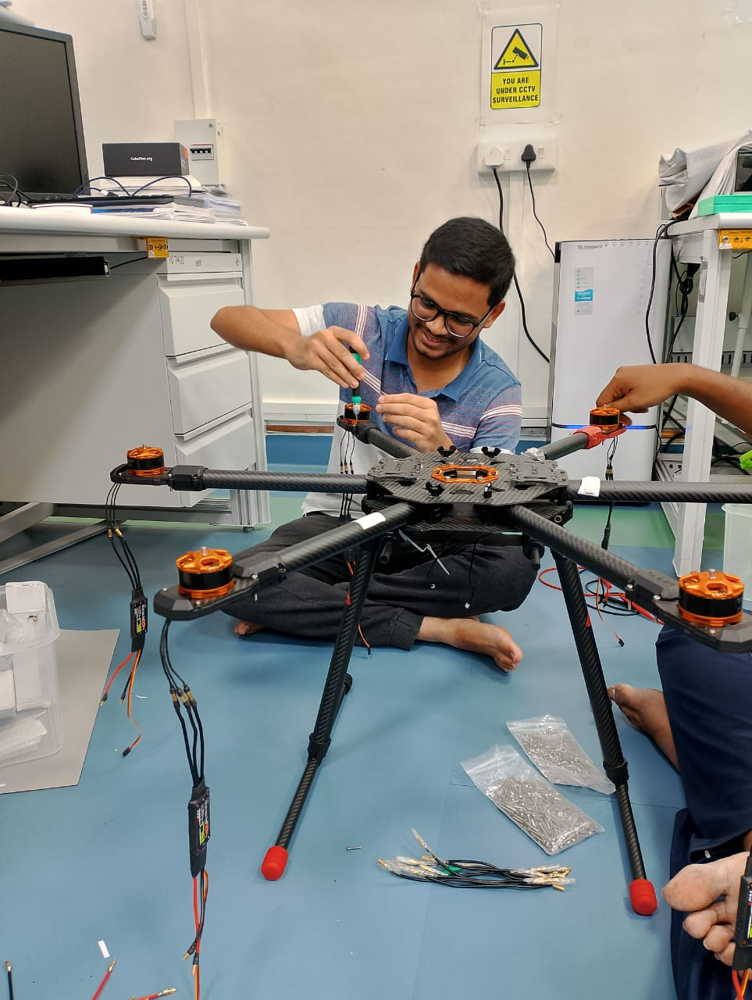
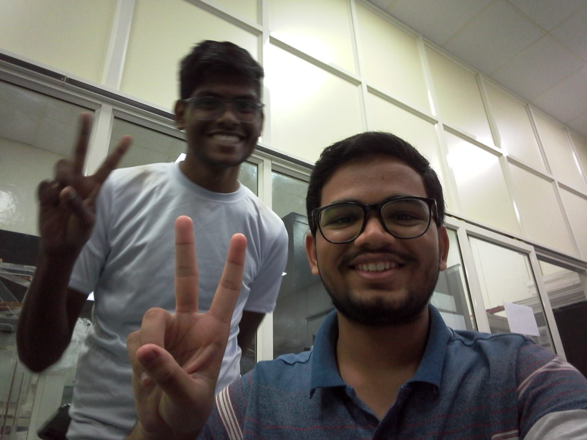

PiLOT_1 was the first payload mission, so the software we designed and implemented over it was also the first one to fly into the space. As the design and implementation time for the software was less, we always choosed a method using which we would be able to realize the software quickly. Due to this decision, unknowingly we made many errors. Some error were so critical that the data was getting corrupted. To rectify this we had to post process the data and remove the corrupted data to get some valid amount of sufficient data. As I was involved in both PiLOT_1 and PiLOT_G2 missions, it was my responsibility to not repeat the same mistakes which we did for the first mission.
It was beggining of my final year project which was on the topic of "Flight software and systems integration for PiLOT_G2 and InspireSat-3 Satellite." The launch dates and inclusion of our payload on the POEM platform wasn't sure at that time. So I started developing device drivers for InspireSat-3 Satellite. More about this would be discussed in some other project. Along with this I was also developing FPGA based blocks which will autonomously send data to the DPU (Data Processing Unit) on POEM platform. In PiLOT_1 mission this was done using interrupts through UART line of the Cortex-M3 Microcontroller. My main aim was to completely remove this periodic interrupt so that our software does not consume time in receiving that interrupt and then sending data over it. This was one major upgrade from the previous mission which helped us to run the SOC at lower clock speed consuming less power.
As discussed in the last project, I had also successfully implemented the In Orbit Reprogramming Operation in debugging mode. When the above two tasks were completed soon after few days we got a confirmation from ISRO that our payload will be part of the POEM platform in the upcoming POEM mission. Some major documents which they required were the mechanical drawing for the base plate to integrate our payload and the maximum electrical power which would be consumed by our payload. I along with my friend who was working on the hardware part for this mission, we met PD sir and decided upon the configuration of the package. After long discussion, the CubeSat UHF Board and GMC (Gieger-Muller-Counter) board was choosed to fly along with the other boards which will be interfaced with the packages over the POEM platform. In total there were two 1U structures which were to be interfaced by a connector. So now there were two major tasks in front of me. First was to develop the drivers to receive the commands from the CubeSat UHF board. And second was to interface the radiation counter with the OBC. On top of this, I also had to design a complete software architecture which should be robust enough to not fail in case of any hardware failure. The software should not also go into some unknown state from where it becomes difficult for it to return to nominal operation. Now implementing all this and testing was difficult for me to do in a stipulated time period. So I asked for a help from my junior who quickly agreed to develop the drivers for the counter. Drivers of CubeSat UHF board was little critical, so I decided to designed, implement and test them.
I along with my senior, we already started making drivers for the Cubesat UHF board. Most of the configurations of the transceiver on the board were completed and ready. Our task was to successfully receive the command sent from the IIST ground station. Accepting the commands on the ADF transceiver was challenging because no interrupt pins were provided. This means we have to always keep polling the ADF transceiver to check if any commands are received or not. The ADF7030-1 transceiver which was placed on CubeSat UHF board also had a Cortex-M0 controller inside it. We were sending the commands but it wasn't getting accepted into the transceiver. Finally a complete round of going through documentations and evaluation software was completed. Finally after spending many days and nights thinking about the same problem, we finally got rid of it and now every command sent to the board was been accepted by the transceiver and the parameters were getting correctly read from it. I was too happy and satisfied because all my efforts have brought fruits in the form of completing the UHF drivers. The picture shown below was my happiness after completing the UHF drivers. You can see all the messy setup in front of me while debugging the issues and making the connections from one board to the other. At this point of time I felt that when the electrical hardware boards gets touch of software which is running over it and handling all the tasks of interfacing the boards, getting telemetry data out of it and operating the complete hardware as required, it adds the value to the mission and makes it a truly autonomously working payload or a satellite.
Until now, all the drivers were ready and tested for PiLOT-G2 mission. Now the most important task of designing the complete software architecture was to be done. All the errors which we did in the PiLOT_1 mission were remembered and corresponding to those a corrective measure was been taken to come up with the final software architecture. When the software architecture was almost ready, we got to know that for this mission the POEM platform will also be providing the functionality to command to our payload. The format for the commands were sent and now I had this add on task of receiving the commands from the POEM packages also. As soon as this task arrived I tried to complete it rapidly. For receiving the command a similar FPGA block was developed and then tested with the starter kit. I could not test it with the OBC which was available in lab. This was because the FPGA in the SOC of that OBC was damaged due to radiations while testing it with the GMC hardware. One lesson which I got from this was that whenever you are testing a specific board, do take care of the other boards involved in the same testing. So ultimately, the commanding module wasn't tested with the OBC and this was the main issue. Leaving the TTPU commanding part aside, I started doing a long duration test for the data transfer module and the CubeSat UHF board. A junior who was involved in developing GMC drivers also created a software to decode the data recorded during this long run tests. We found out several errors and bugs which I fixed before leaving home for my summer vacations.
Yes, my last semester at IIST was completed. During this last semester most of the students enjoys going for trips, watching movies and having fun time along with many other friends. I wasn't that kind of guy. My interest and passion towards developing state of the art softwares with latest technologies into it ultimately dropped my interest for having all this fun activities. The satisfaction I had on clearing out some critical issues and problems was way much greater than spending time on going for trips and watching movies. Whenever my friends asked me to come with them for the trips, my only question was "What will I do there???" For most of the peoples, trips are meant for relaxing their body and having some new experiences. But I have always seen that after returning back from a trip, one is way more tired then what he was while going for a trip. And especially during this last semester, I did not want to spend time on relaxing because I was aware that this could be my last few months for working at SSPACE lab and contributing to it. Anyone who has to start from where I did two years back would take considerable time mastering the development tools and getting acquainted with it. Many of the students left this task in between because they feels like there are lot of things involved in it and they have to spend lot of time learning it. As I had reached so far in doing this job, it was my responsibility to complete as much work as possible, because I never know if someone equally capable of me would take this task forward. I had a million times pleasure working at SSPACE lab and ground station. Last few days I spent completely in this two labs exploring the unexplored things and transfering my knowledge to my juniors (Images above are the last few memories captured at IIST). PD sir did forced me to return back to campus as a Junior Project Fellow, but I wanted to spend quality time with my parents for next four months until we get the joining letter from ISRO. I promised sir that, I will be supporting the lab and the PiLOT_G2 mission even I am at home. I had to return home in the last week of May as my sisters wedding was just a month away and there were lot of preparations to be done.
Sister's wedding was over and our convocation program was followed right after it. We received our degree through the hands of Somanath Sir (Chairman ISRO and Secretary DOS) in the presence of Jagdeep Dhankhar (Vice-President of India). This was the first time my parents visited the campus and meet PD sir. We were back at home after the convocation was over. But the mission PiLOT_G2 which was later renamed to GRACE was not over yet. My friend who worked on hardware was back in the campus as a JPF. He carried the mission smoothly and worked hard to fabricate all the boards. When the boards were ready we tested the software over it. The integration of the package was completed. There were many challenges and hurdles, and one by one all of them were cleared. One of the biggest hurdle was that the reprogramming was not working in the production mode.

During one of the meet with Unnikrishnan Nair Sir (Director of IIST and VSSC), he asked a question which said "What makes your mission different and more innovating from the other commercial payloads?" PD sir replied to this by stating the reprogramming objective of the mission and explained the need of it. It was a big shock for me as this was the only thing which was revolutionary and something different which we were going to prove from the mission's point of view. We started going through the documentation provided by the SOC manufacturer. Day and night I was thinking of the same problem which was resisting the reprogramming to work in production mode. My junior who worked on this mission helped me for making the circuit connections and debugging the software over the hardware. We use to join the meet in the early morning at 7am itself. During this issue, whole day long we were in the meet discussing the possible solution for the problem and then trying multiple alternatives to make this work. I also had my senior to guide me to try different alternatives if some of them does not work. Finally after three days of continuous efforts, we were able to solve the problem and the reprogramming was working in production mode as it did in debugging mode. After solving this issue we got some more time by using which rectified few more bugs and added some more functionality to the software. One of which was the toggling nature of the reprogramming functionality. That means after going into the update image after reprogramming once, we have option to revert back to the first image which was already running on the board. The final software images were generated and loaded onto the flash. The final software was flashed onto the board and long time testings were carried out. The software worked perfectly and the payload was now ready to undergo the pre-flight testings.